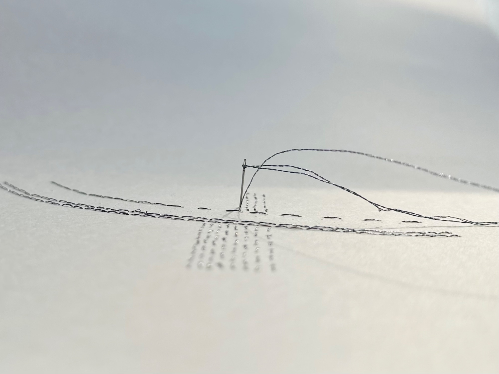
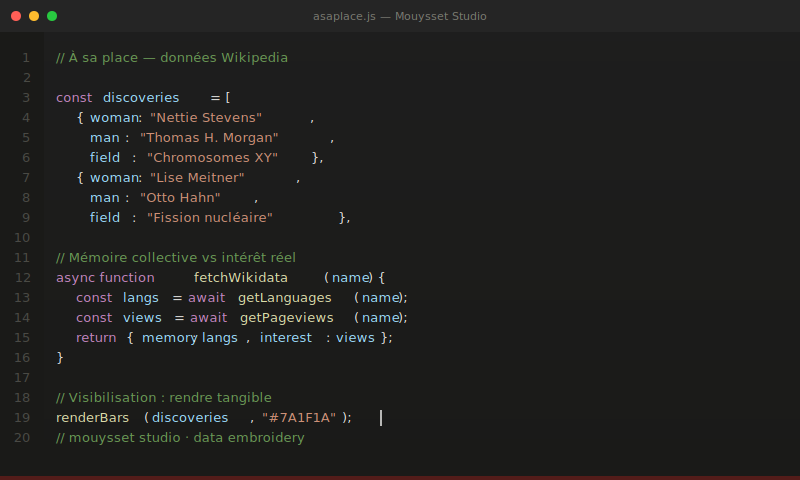

Comment ça fonctionne

Broderie
Broder des données invisibles sur du papier. Rapports de pouvoir, émotions face à la nature, pensées divergentes : les fils dessinent ce que les chiffres ne peuvent pas mesurer mais qui structure nos vies.

Numérique
Coder des objets numériques pour contextualiser des données visibles. Curseurs, filtres, visualisations dynamiques : chacun peut explorer et se questionner. L'information devient appropriable.

Ateliers & Performances
Inviter le public à créer ensemble. Broder, performer les données, dialoguer : le public devient acteur de la révélation. Le geste devient espace de transmission.